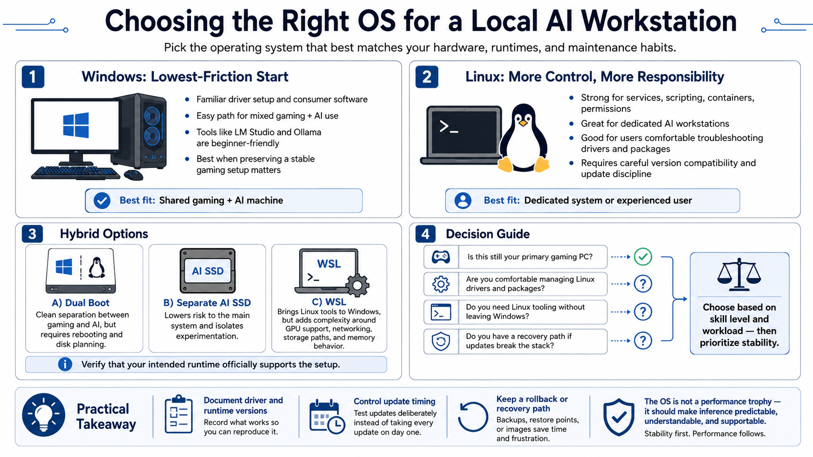

Choosing the Operating System
Connecting to LMS... Progress: in progress

Narration
The best operating system is the one that supports the hardware, runtime, and maintenance habits of the person using it. Windows is often the lowest-friction path for a shared gaming and AI machine. Driver installation is familiar, consumer applications remain available, and tools such as LM Studio or Ollama can provide a straightforward first experience. If the workstation must still function as the owner's gaming PC, preserving a stable Windows setup may be more valuable than adopting a technically elegant but unfamiliar environment.
Linux offers deeper control over services, scripting, permissions, containers, and many machine-learning toolchains. It is attractive for a dedicated workstation or a user comfortable diagnosing packages, drivers, and kernel interactions. That control has a maintenance cost. A Linux distribution, GPU driver, runtime, and model framework still need compatible versions, and an automatic update can disrupt a previously working stack if changes are not managed deliberately.
Dual boot separates gaming and AI environments cleanly, but requires disk planning and a reboot to switch workloads. A separate AI installation on another SSD can reduce risk to the primary system. Windows Subsystem for Linux provides Linux tooling without a complete second operating system and works well for many development workflows, but GPU pass-through, networking, storage paths, and memory behavior add another layer to troubleshoot. Verify that the intended runtime officially supports the selected arrangement.
Choose based on skill level and workload, then favor stability. Document driver and runtime versions, control update timing, and keep a recovery path. The operating system is not a performance trophy; it is the foundation that should make routine inference predictable, understandable, and supportable.